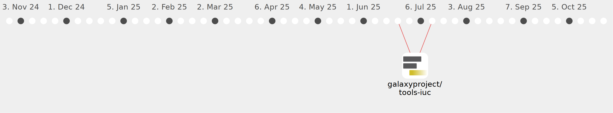

Galaxy Community Activities
neo417
neo417
https://github.com/neo417
Commits all-time:
21
Commits last year:
21

galaxyproject/tools-iuc
(20)
d0dc087
09a3d36
1126447
8c85ed8
c34f016
5397937
614b71e
3b40ea9
1b4c5b1
c819f01
e7b44aa
e346b27
98006d1
3be0d2f
f525dd8
95ec8db
248eb97
3e053ee
bd40f65
cc220f5
bgruening/galaxytools
(1)
3b25a96